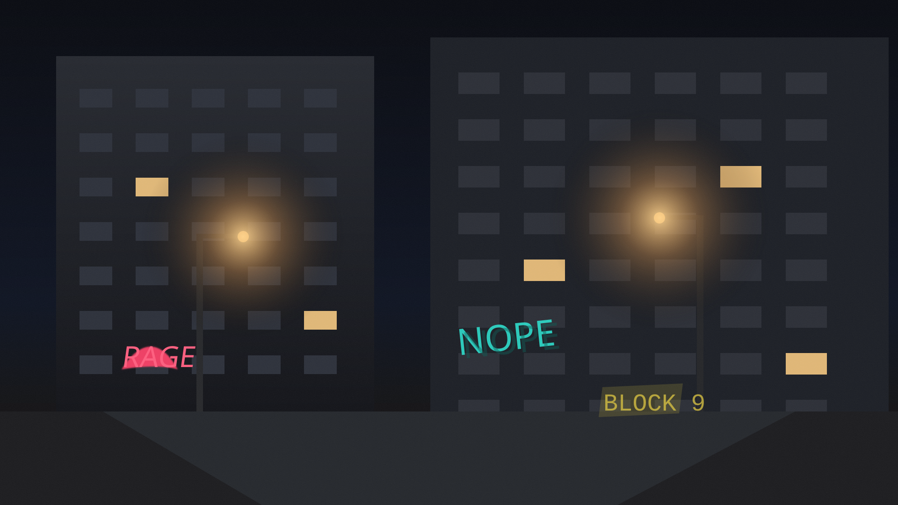

Gritty Apartment Alley Visualization
Product preview for the dark urban background prototype: multi-floor apartments, spray-paint graffiti, warm streetlamp pools, and noisy grime texture designed for a stubborn retro-shooter backdrop.
Scene preview
1920 × 1080 SVG prototype
